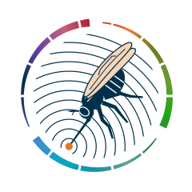
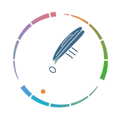
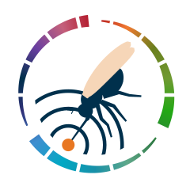
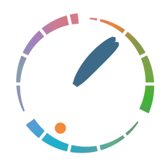
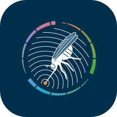
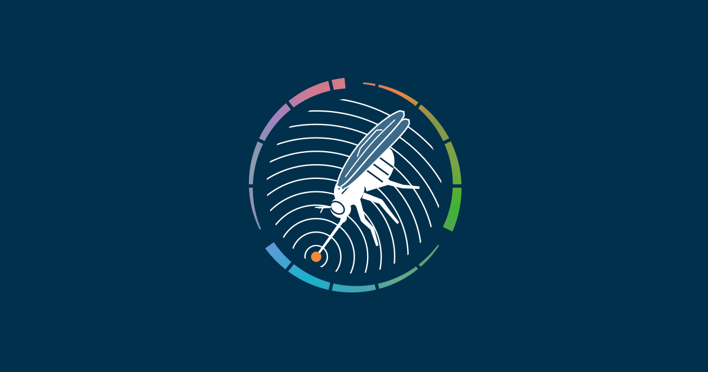
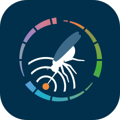

A tsetse fly with its proboscis on the point where a search starts, search waves spreading from it, inside a loop of the fourteen VEuPathDB site colours. The loop has three parts for frame, build and verify, and turns while the agent works. Everything below is the real file at its real pixel size.


The logo is the mark alone, with no name. The loop turns once every seven seconds. Static files are used wherever motion is not wanted, and the animated file falls back to the static one for viewers who ask for reduced motion.
Each pair shows the full mark on the left and the favicon cut on the right. The cut keeps the same insect and proportions, with a heavier ring and three bold waves in place of fourteen fine ones.


PathFinder · PlasmoDB
PathFinder

For places that need the name spelled out, such as a slide or a partner page. The logo itself stays the mark alone. The name is Geist SemiBold, the app's own typeface, converted to outlines so the file needs no font.

The loop runs through the colour of each VEuPathDB site, sampled from its icon, in hue order. Navy draws the insect and the waves. Orange marks the one point where the search starts. On dark surfaces the dark end of the loop is lifted toward white so no part of it disappears.
#b0101e#f07a30#6b7f1e#6f9a32#22a814#2f7a45#5fa88a#1890a8#00a8c4#3f8fd0#303078#00304c#6a3fa0#c4607c#e87722| File | Use | Size |
|---|---|---|
pathfinder-mark-light.svg | The logo. Use on white and light surfaces. | 32 KB |
pathfinder-mark-dark.svg | The logo on navy and dark surfaces. Navy and violet in the ring are lifted so the loop stays whole. | 32 KB |
pathfinder-mark-light-animated.svg | The logo with the loop turning. For the agent's working state. | 32 KB |
pathfinder-mark-dark-animated.svg | The animated logo for dark surfaces. | 32 KB |
favicon.svg | The small-size cut: heavier ring, three bold waves. Switches to its dark colours by itself when the browser is in dark mode. | 31 KB |
favicon-dark.svg | The small-size cut in its dark colours only, for places that cannot follow the browser theme. | 30 KB |
favicon.ico | 16, 32 and 48 px in one file, for browsers that ask for /favicon.ico. | 15 KB |
app-icon.svg | The logo on a navy rounded square, for home screens and the PWA manifest. | 32 KB |
app-icon-small.svg | The app icon built from the small-size cut, for 48 px and under. | 31 KB |
apple-touch-icon.png | 180 px app icon for iOS home screens. | 18 KB |
png/icon-192.png | 192 px app icon for the manifest. | 20 KB |
png/icon-512.png | 512 px app icon for the manifest. | 68 KB |
social-card.svg | 1200 by 630 link preview, logo only. | 32 KB |
pathfinder-lockup-light.svg | Optional. The logo with the name beside it, in Geist SemiBold outlined from the app's own font file. | 35 KB |
pathfinder-lockup-dark.svg | Optional. The same lockup for dark surfaces. | 35 KB |
This folder is assets/brand in the repository. The web app serves its own copies of the marks, the favicons and the iOS icon from apps/web/public/brand, names them in one place, apps/web/src/lib/brand.ts, and fails a test if any copy differs from this folder. The API documentation reads its logo and favicon from this folder directly.